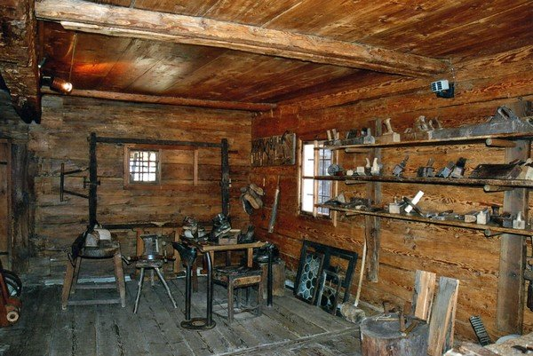
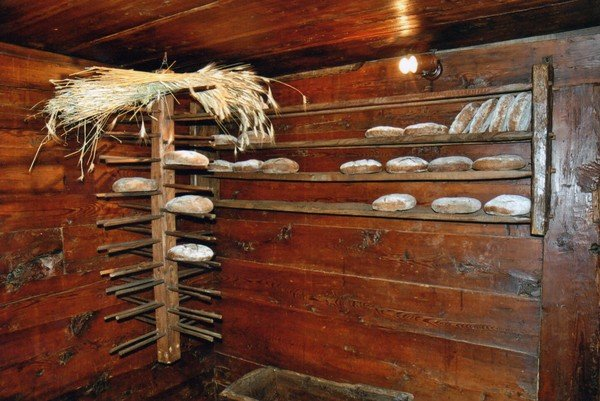

Pianterreno
Focolare-cucina, sala crocevia e la stube: il cuore della casa walser.

Entra in una casa del Seicento e scopri la vita del popolo walser ai piedi del Monte Rosa. Prenota online l’ingresso: visita guidata di circa un’ora.
Perché visitarla
Il Museo Antica Casa Walser di Borca (Alts Walserhüüs Van Zer Burfuggu) raccoglie, cataloga e preserva gli oggetti della vita quotidiana del popolo walser di Macugnaga.
È ospitato nella casa parrocchiale del XVII secolo a Borca: uno dei migliori esempi di abitazione tradizionale del territorio, quasi intatto nei secoli. I reperti furono donati in gran parte dai macugnaghesi stessi.
Un’esperienza autentica per famiglie, scuole, coppie e chi vuole capire il villaggio oltre il paesaggio — anche in un weekend a Macugnaga o in una gita dalla pianura: prenota ora e assicurati il posto.

Il percorso
La visita guidata (circa un’ora) ti accompagna tra focolare, laboratori dei mestieri e sale delle tradizioni — oltre alle mostre dell’interrato.
Focolare-cucina, sala crocevia e la stube: il cuore della casa walser.

Collezioni di attrezzi, calzoleria e laboratori della vita quotidiana alpina.

Oggetti della lavorazione del pane e ambienti autentici del piano alto.
Prenota online
Pagamento sicuro con carta o PayPal. Conferma immediata via email. Ideale per il weekend a Macugnaga, per famiglie e per chi vuole approfondire la cultura alpina.
Chi erano i Walser
Dal Medioevo, piccoli gruppi di coloni alemanni lasciarono l’alto Vallese e, attraverso i valichi alpini — tra cui il Passo del Monte Moro — fondarono Macugnaga.
Nella Casa Museo trovi la memoria concreta di quella comunità: mestieri, oggetti domestici, pane, miniera. Un pezzo essenziale per capire il paese che stai visitando.
Fonte e approfondimenti: museowalser.com
Info pratiche
Aperto in estate e nei periodi festivi secondo calendario; visitabile tutto l’anno su appuntamento. La prenotazione online è il modo più semplice per fissare la tua visita senza incertezze.
FAQ
Clicca su Effettua prenotazione: si apre il modulo di prenotazione online per l’ingresso alla Casa Museo. Completa il pagamento e ricevi conferma via email.
Nella frazione Borca di Macugnaga (VB), in Valle Anzasca ai piedi del Monte Rosa, nella casa parrocchiale del XVII secolo.
Circa un’ora: interrato con stampe e mostre; pianterreno con cucina, ingresso e stube; piano alto con mestieri, pane e documenti minerari.
Sì: ambienti concreti e racconti della vita di un tempo. Ideale anche per scuole e gruppi.
Sì, su appuntamento. Prenotando online fissi data e ingresso; per esigenze particolari contatta il museo al 347 9842329.
È il complemento culturale perfetto a passeggiate, miniera e impianti: in un’ora conosci l’anima walser del paese. Ideale anche in una gita da Milano, Varese o Novara. Organizza il weekend.
La prenotazione online è del portale di prenotazione Mountain Experience Monterosa Macugnaga (Lem s.r.l. per Unione Montana e operatori locali). Pagamento sicuro con carta o PayPal.
Informazioni, prezzi e disponibilità del portale di prenotazione sono indicati dai gestori. Dopo la prenotazione riceverai i contatti degli organizzatori. Lem s.r.l. non è responsabile della gestione delle attività. Maggiori informazioni